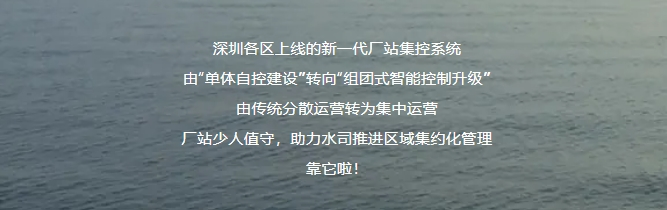

◐
正如，新消费时代下
“组团游”成为高性价比的“白月光”
水务数字化、厂站集约化管控时代下
厂站“组团式”升级将成为高价值“顶流”
深水达人带你
“组团”游（参观）深圳（各区厂站）
从深圳入海口一路向西
一键“奔赴山海”
一览“各区厂站集控”特色
第一站盐田
通山达海
大厂下有小厂，厂站少人值守
盐田是深圳最美丽的"黄金海岸"之一。
盐田常住人口较少却年吸引超千万的游客前来打卡。
左右滑看更多
目前，盐田分公司这3座水厂已实现生产集中管理、少人值守运行，运行人数由36人减少到16人，全业务集中运行安全稳定，水厂出水水质稳定（出厂水浊度＜0.1NTU）。

第二站罗湖
湖光山色
厂站联动，排水管网水量智能调度

罗湖是 深圳高度集约化的中心城区之一。
该厂把水处理设施搬到地下，将地面空间还给市民，净化之水又用于公园生态景观补水。
目前，罗湖分公司已完成东湖水厂，罗芳水质净化厂、洪湖水质净化厂以及15个泵站的厂站集中管控，未来将实现排水管网水量智能调度。

第三站福田
城市绿洲
全面集中监控，厂站智慧化升级
福田被誉为中国绿地率最高的CBD。
隐藏于福田海滨生态体育公园下的福田水质净化厂，以及紧邻深圳河， 目前国内采用AOA工艺的最大规模水质净化厂——滨河水质净化厂 ，一起守护着城市水污染防治的最后一道防线。
左右滑看更多
福田在排水、供水上均涉及 与 罗湖、南山的跨区调配，调度更复杂。

第四站南山
湾区生态
排泵集中监控，探索排海干渠智慧调度
左右滑看更多
南山是最具科技创新活力的区，是集约式、高质量发展的核心引擎地带。
这有目前 国内一次性建成规模最大的自来水厂——南山水厂，保障高质量发展下的用水需求。
南山 排水管网处于末梢段 ，排水调度复杂，通过集控系统能有效 减少内涝风险和水质风险 。

第五站宝安
滨海河川
厂站网联动，集中供水调度
宝安汇聚“海陆空”交通枢纽的空港都市区 。
一路往西，有一座古典园林建筑气息的智慧水厂——五指耙水厂。
左右滑看更多
目前，深水宝安水务集团应用新一代厂站集控系统实现五指耙水厂、朱坳水厂、新安水厂等9座水厂，5座泵站的 “联 通、 联控、联管” ， 与自适应平台结合实现 厂站网联动、集中供水调度 。

那么，新一代厂站集控系统与传统系统的区别在哪里？